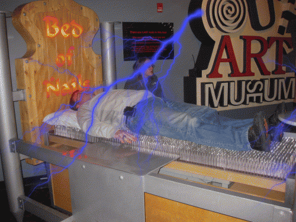

Titanic Museum
A Lego Titanic found in the gift shop.
"Kitsch is intended to satisfy the masses, not challenge the individual and that it often, or perhaps always, has a purpose beyond the inherent meaning or purpose that one expects from other forms of art." - Nicholas Petrone, Medium

Titanic-themed magnets available for purchase.
"The gift shop was pleasantly affordable, so we were able to purchase several souvenirs to add to our already large Titanic collection!" - Trip Advisor user
Hollywood Wax Museum

Various locations of the museum throughout the country.
"Kitsch can be defined as a low-brow style of mass-produced art or design using popular or cultural icons." - Lorenzo Pereira, Widewalls
Live Alligators Souvenir Shop
A daringly patriotic set.
"Stuff was cheap, gaudy, and over priced." - Trip Advisor user

A bear rug.
"Kitsch is the German word for trash, and is used in English to describe particularly cheap, vulgar and sentimental forms of popular and commercial culture." - Tate
Wonderworks

Various locations of the museum throughout the country.
"When I went to the Myrtle Beach location, I really enjoyed it, but I think that was a holiday romance, as the location in Pigeon Forge feels so similar to the one in Myrtle Beach. They have the 360 bikes, the ropes course, the bed of nails, the bubbles exhibit, an arcade, and laser tag, just like the Myrtle Beach location. It's not that it's bad thing mind you, but it was just something that bothered me, given the similarities between the two locations." - Trip Advisor user

The bed of nails, which can be seen at multiple locations of Wonderworks.

Both the Mona Lisa and the United States map have be commodified many times, and this time they were turned into a sort of artistic installation by a museum.
"If works of art were judged democratically--that is, according to how many people like them--kitsch would easily defeat all its competitors" - Thomas Kulka, Kitsch and Art